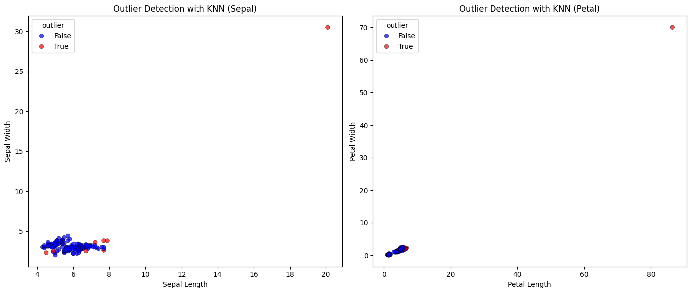

<!DOCTYPE html>


<html lang="en" data-content_root="./" >

  <head>
    <meta charset="utf-8" />
    <meta name="viewport" content="width=device-width, initial-scale=1.0" /><meta name="viewport" content="width=device-width, initial-scale=1" />

    <title>Local Outlier Factor &#8212; Data-Mining</title>
  
  
  
  <script data-cfasync="false">
    document.documentElement.dataset.mode = localStorage.getItem("mode") || "";
    document.documentElement.dataset.theme = localStorage.getItem("theme") || "";
  </script>
  
  <!-- Loaded before other Sphinx assets -->
  <link href="_static/styles/theme.css?digest=dfe6caa3a7d634c4db9b" rel="stylesheet" />
<link href="_static/styles/bootstrap.css?digest=dfe6caa3a7d634c4db9b" rel="stylesheet" />
<link href="_static/styles/pydata-sphinx-theme.css?digest=dfe6caa3a7d634c4db9b" rel="stylesheet" />

  
  <link href="_static/vendor/fontawesome/6.5.2/css/all.min.css?digest=dfe6caa3a7d634c4db9b" rel="stylesheet" />
  <link rel="preload" as="font" type="font/woff2" crossorigin href="_static/vendor/fontawesome/6.5.2/webfonts/fa-solid-900.woff2" />
<link rel="preload" as="font" type="font/woff2" crossorigin href="_static/vendor/fontawesome/6.5.2/webfonts/fa-brands-400.woff2" />
<link rel="preload" as="font" type="font/woff2" crossorigin href="_static/vendor/fontawesome/6.5.2/webfonts/fa-regular-400.woff2" />

    <link rel="stylesheet" type="text/css" href="_static/pygments.css?v=03e43079" />
    <link rel="stylesheet" type="text/css" href="_static/styles/sphinx-book-theme.css?v=eba8b062" />
    <link rel="stylesheet" type="text/css" href="_static/togglebutton.css?v=13237357" />
    <link rel="stylesheet" type="text/css" href="_static/copybutton.css?v=76b2166b" />
    <link rel="stylesheet" type="text/css" href="_static/mystnb.4510f1fc1dee50b3e5859aac5469c37c29e427902b24a333a5f9fcb2f0b3ac41.css" />
    <link rel="stylesheet" type="text/css" href="_static/sphinx-thebe.css?v=4fa983c6" />
    <link rel="stylesheet" type="text/css" href="_static/sphinx-design.min.css?v=95c83b7e" />
  
  <!-- Pre-loaded scripts that we'll load fully later -->
  <link rel="preload" as="script" href="_static/scripts/bootstrap.js?digest=dfe6caa3a7d634c4db9b" />
<link rel="preload" as="script" href="_static/scripts/pydata-sphinx-theme.js?digest=dfe6caa3a7d634c4db9b" />
  <script src="_static/vendor/fontawesome/6.5.2/js/all.min.js?digest=dfe6caa3a7d634c4db9b"></script>

    <script src="_static/documentation_options.js?v=9eb32ce0"></script>
    <script src="_static/doctools.js?v=9a2dae69"></script>
    <script src="_static/sphinx_highlight.js?v=dc90522c"></script>
    <script src="_static/clipboard.min.js?v=a7894cd8"></script>
    <script src="_static/copybutton.js?v=f281be69"></script>
    <script src="_static/scripts/sphinx-book-theme.js?v=887ef09a"></script>
    <script>let toggleHintShow = 'Click to show';</script>
    <script>let toggleHintHide = 'Click to hide';</script>
    <script>let toggleOpenOnPrint = 'true';</script>
    <script src="_static/togglebutton.js?v=4a39c7ea"></script>
    <script>var togglebuttonSelector = '.toggle, .admonition.dropdown';</script>
    <script src="_static/design-tabs.js?v=f930bc37"></script>
    <script>const THEBE_JS_URL = "https://unpkg.com/thebe@0.8.2/lib/index.js"; const thebe_selector = ".thebe,.cell"; const thebe_selector_input = "pre"; const thebe_selector_output = ".output, .cell_output"</script>
    <script async="async" src="_static/sphinx-thebe.js?v=c100c467"></script>
    <script>var togglebuttonSelector = '.toggle, .admonition.dropdown';</script>
    <script>const THEBE_JS_URL = "https://unpkg.com/thebe@0.8.2/lib/index.js"; const thebe_selector = ".thebe,.cell"; const thebe_selector_input = "pre"; const thebe_selector_output = ".output, .cell_output"</script>
    <script>DOCUMENTATION_OPTIONS.pagename = 'Tugas3';</script>
    <link rel="index" title="Index" href="genindex.html" />
    <link rel="search" title="Search" href="search.html" />
    <link rel="prev" title="Outlier and KNN" href="Tugas2.html" />
  <meta name="viewport" content="width=device-width, initial-scale=1"/>
  <meta name="docsearch:language" content="en"/>
  </head>
  
  
  <body data-bs-spy="scroll" data-bs-target=".bd-toc-nav" data-offset="180" data-bs-root-margin="0px 0px -60%" data-default-mode="">

  
  
  <div id="pst-skip-link" class="skip-link d-print-none"><a href="#main-content">Skip to main content</a></div>
  
  <div id="pst-scroll-pixel-helper"></div>
  
  <button type="button" class="btn rounded-pill" id="pst-back-to-top">
    <i class="fa-solid fa-arrow-up"></i>Back to top</button>

  
  <input type="checkbox"
          class="sidebar-toggle"
          id="pst-primary-sidebar-checkbox"/>
  <label class="overlay overlay-primary" for="pst-primary-sidebar-checkbox"></label>
  
  <input type="checkbox"
          class="sidebar-toggle"
          id="pst-secondary-sidebar-checkbox"/>
  <label class="overlay overlay-secondary" for="pst-secondary-sidebar-checkbox"></label>
  
  <div class="search-button__wrapper">
    <div class="search-button__overlay"></div>
    <div class="search-button__search-container">
<form class="bd-search d-flex align-items-center"
      action="search.html"
      method="get">
  <i class="fa-solid fa-magnifying-glass"></i>
  <input type="search"
         class="form-control"
         name="q"
         id="search-input"
         placeholder="Search this book..."
         aria-label="Search this book..."
         autocomplete="off"
         autocorrect="off"
         autocapitalize="off"
         spellcheck="false"/>
  <span class="search-button__kbd-shortcut"><kbd class="kbd-shortcut__modifier">Ctrl</kbd>+<kbd>K</kbd></span>
</form></div>
  </div>

  <div class="pst-async-banner-revealer d-none">
  <aside id="bd-header-version-warning" class="d-none d-print-none" aria-label="Version warning"></aside>
</div>

  
    <header class="bd-header navbar navbar-expand-lg bd-navbar d-print-none">
    </header>
  

  <div class="bd-container">
    <div class="bd-container__inner bd-page-width">
      
      
      
      <div class="bd-sidebar-primary bd-sidebar">
        

  
  <div class="sidebar-header-items sidebar-primary__section">
    
    
    
    
  </div>
  
    <div class="sidebar-primary-items__start sidebar-primary__section">
        <div class="sidebar-primary-item">

  
    
  

<a class="navbar-brand logo" href="intro.html">
  
  
  
  
  
    
    
      
    
    
    
    <script>document.write(``);</script>
  
  
</a></div>
        <div class="sidebar-primary-item">

 <script>
 document.write(`
   <button class="btn search-button-field search-button__button" title="Search" aria-label="Search" data-bs-placement="bottom" data-bs-toggle="tooltip">
    <i class="fa-solid fa-magnifying-glass"></i>
    <span class="search-button__default-text">Search</span>
    <span class="search-button__kbd-shortcut"><kbd class="kbd-shortcut__modifier">Ctrl</kbd>+<kbd class="kbd-shortcut__modifier">K</kbd></span>
   </button>
 `);
 </script></div>
        <div class="sidebar-primary-item"><nav class="bd-links bd-docs-nav" aria-label="Main">
    <div class="bd-toc-item navbar-nav active">
        
        <ul class="nav bd-sidenav bd-sidenav__home-link">
            <li class="toctree-l1">
                <a class="reference internal" href="intro.html">
                    Introduction
                </a>
            </li>
        </ul>
        <ul class="current nav bd-sidenav">
<li class="toctree-l1"><a class="reference internal" href="aboutData.html">What is Data?</a></li>
<li class="toctree-l1"><a class="reference internal" href="dataProcess.html">Data Mining Process</a></li>
<li class="toctree-l1"><a class="reference internal" href="Tugas1.html">Data Understanding</a></li>
<li class="toctree-l1"><a class="reference internal" href="Tugas2.html">Outlier and KNN</a></li>
<li class="toctree-l1 current active"><a class="current reference internal" href="#">Local Outlier Factor</a></li>
</ul>

    </div>
</nav></div>
    </div>
  
  
  <div class="sidebar-primary-items__end sidebar-primary__section">
  </div>
  
  <div id="rtd-footer-container"></div>


      </div>
      
      <main id="main-content" class="bd-main" role="main">
        
        

<div class="sbt-scroll-pixel-helper"></div>

          <div class="bd-content">
            <div class="bd-article-container">
              
              <div class="bd-header-article d-print-none">
<div class="header-article-items header-article__inner">
  
    <div class="header-article-items__start">
      
        <div class="header-article-item"><button class="sidebar-toggle primary-toggle btn btn-sm" title="Toggle primary sidebar" data-bs-placement="bottom" data-bs-toggle="tooltip">
  <span class="fa-solid fa-bars"></span>
</button></div>
      
    </div>
  
  
    <div class="header-article-items__end">
      
        <div class="header-article-item">

<div class="article-header-buttons">


<div class="dropdown dropdown-source-buttons">
  <button class="btn dropdown-toggle" type="button" data-bs-toggle="dropdown" aria-expanded="false" aria-label="Source repositories">
    <i class="fab fa-github"></i>
  </button>
  <ul class="dropdown-menu">
      
      
      
      <li><a href="https://github.com/rhindottire/Data-Mining" target="_blank"
   class="btn btn-sm btn-source-repository-button dropdown-item"
   title="Source repository"
   data-bs-placement="left" data-bs-toggle="tooltip"
>
  

<span class="btn__icon-container">
  <i class="fab fa-github"></i>
  </span>
<span class="btn__text-container">Repository</span>
</a>
</li>
      
      
      
      
      <li><a href="https://github.com/rhindottire/Data-Mining/issues/new?title=Issue%20on%20page%20%2FTugas3.html&body=Your%20issue%20content%20here." target="_blank"
   class="btn btn-sm btn-source-issues-button dropdown-item"
   title="Open an issue"
   data-bs-placement="left" data-bs-toggle="tooltip"
>
  

<span class="btn__icon-container">
  <i class="fas fa-lightbulb"></i>
  </span>
<span class="btn__text-container">Open issue</span>
</a>
</li>
      
  </ul>
</div>


<div class="dropdown dropdown-download-buttons">
  <button class="btn dropdown-toggle" type="button" data-bs-toggle="dropdown" aria-expanded="false" aria-label="Download this page">
    <i class="fas fa-download"></i>
  </button>
  <ul class="dropdown-menu">
      
      
      
      <li><a href="_sources/Tugas3.ipynb" target="_blank"
   class="btn btn-sm btn-download-source-button dropdown-item"
   title="Download source file"
   data-bs-placement="left" data-bs-toggle="tooltip"
>
  

<span class="btn__icon-container">
  <i class="fas fa-file"></i>
  </span>
<span class="btn__text-container">.ipynb</span>
</a>
</li>
      
      
      
      
      <li>
<button onclick="window.print()"
  class="btn btn-sm btn-download-pdf-button dropdown-item"
  title="Print to PDF"
  data-bs-placement="left" data-bs-toggle="tooltip"
>
  

<span class="btn__icon-container">
  <i class="fas fa-file-pdf"></i>
  </span>
<span class="btn__text-container">.pdf</span>
</button>
</li>
      
  </ul>
</div>


<button onclick="toggleFullScreen()"
  class="btn btn-sm btn-fullscreen-button"
  title="Fullscreen mode"
  data-bs-placement="bottom" data-bs-toggle="tooltip"
>
  

<span class="btn__icon-container">
  <i class="fas fa-expand"></i>
  </span>

</button>


<script>
document.write(`
  <button class="btn btn-sm nav-link pst-navbar-icon theme-switch-button" title="light/dark" aria-label="light/dark" data-bs-placement="bottom" data-bs-toggle="tooltip">
    <i class="theme-switch fa-solid fa-sun fa-lg" data-mode="light"></i>
    <i class="theme-switch fa-solid fa-moon fa-lg" data-mode="dark"></i>
    <i class="theme-switch fa-solid fa-circle-half-stroke fa-lg" data-mode="auto"></i>
  </button>
`);
</script>


<script>
document.write(`
  <button class="btn btn-sm pst-navbar-icon search-button search-button__button" title="Search" aria-label="Search" data-bs-placement="bottom" data-bs-toggle="tooltip">
    <i class="fa-solid fa-magnifying-glass fa-lg"></i>
  </button>
`);
</script>

</div></div>
      
    </div>
  
</div>
</div>
              
              

<div id="jb-print-docs-body" class="onlyprint">
    <h1>Local Outlier Factor</h1>
    <!-- Table of contents -->
    <div id="print-main-content">
        <div id="jb-print-toc">
            
        </div>
    </div>
</div>

              
                
<div id="searchbox"></div>
                <article class="bd-article">
                  
  <section class="tex2jax_ignore mathjax_ignore" id="local-outlier-factor">
<h1>Local Outlier Factor<a class="headerlink" href="#local-outlier-factor" title="Link to this heading">#</a></h1>
<div class="cell docutils container">
<div class="cell_input docutils container">
<div class="highlight-ipython3 notranslate"><div class="highlight"><pre><span></span><span class="o">%</span><span class="k">pip</span> install psycopg2 pymysql numpy pandas seaborn matplotlib scipy scikit-learn
</pre></div>
</div>
</div>
<div class="cell_output docutils container">
<div class="output stream highlight-myst-ansi notranslate"><div class="highlight"><pre><span></span>Collecting psycopg2
</pre></div>
</div>
<div class="output stream highlight-myst-ansi notranslate"><div class="highlight"><pre><span></span>  Downloading psycopg2-2.9.10.tar.gz (385 kB)
</pre></div>
</div>
<div class="output stream highlight-myst-ansi notranslate"><div class="highlight"><pre><span></span>  Preparing metadata (setup.py) ... ?25l-
</pre></div>
</div>
<div class="output stream highlight-myst-ansi notranslate"><div class="highlight"><pre><span></span> done
?25hRequirement already satisfied: pymysql in /opt/hostedtoolcache/Python/3.10.16/x64/lib/python3.10/site-packages (1.1.1)
Requirement already satisfied: numpy in /opt/hostedtoolcache/Python/3.10.16/x64/lib/python3.10/site-packages (2.2.4)
Requirement already satisfied: pandas in /opt/hostedtoolcache/Python/3.10.16/x64/lib/python3.10/site-packages (2.2.3)
Collecting seaborn
  Downloading seaborn-0.13.2-py3-none-any.whl.metadata (5.4 kB)
Requirement already satisfied: matplotlib in /opt/hostedtoolcache/Python/3.10.16/x64/lib/python3.10/site-packages (3.10.1)
Requirement already satisfied: scipy in /opt/hostedtoolcache/Python/3.10.16/x64/lib/python3.10/site-packages (1.15.2)
Requirement already satisfied: scikit-learn in /opt/hostedtoolcache/Python/3.10.16/x64/lib/python3.10/site-packages (1.6.1)
</pre></div>
</div>
<div class="output stream highlight-myst-ansi notranslate"><div class="highlight"><pre><span></span>Requirement already satisfied: python-dateutil&gt;=2.8.2 in /opt/hostedtoolcache/Python/3.10.16/x64/lib/python3.10/site-packages (from pandas) (2.9.0.post0)
Requirement already satisfied: pytz&gt;=2020.1 in /opt/hostedtoolcache/Python/3.10.16/x64/lib/python3.10/site-packages (from pandas) (2025.1)
Requirement already satisfied: tzdata&gt;=2022.7 in /opt/hostedtoolcache/Python/3.10.16/x64/lib/python3.10/site-packages (from pandas) (2025.1)
Requirement already satisfied: contourpy&gt;=1.0.1 in /opt/hostedtoolcache/Python/3.10.16/x64/lib/python3.10/site-packages (from matplotlib) (1.3.1)
Requirement already satisfied: cycler&gt;=0.10 in /opt/hostedtoolcache/Python/3.10.16/x64/lib/python3.10/site-packages (from matplotlib) (0.12.1)
Requirement already satisfied: fonttools&gt;=4.22.0 in /opt/hostedtoolcache/Python/3.10.16/x64/lib/python3.10/site-packages (from matplotlib) (4.56.0)
Requirement already satisfied: kiwisolver&gt;=1.3.1 in /opt/hostedtoolcache/Python/3.10.16/x64/lib/python3.10/site-packages (from matplotlib) (1.4.8)
Requirement already satisfied: packaging&gt;=20.0 in /opt/hostedtoolcache/Python/3.10.16/x64/lib/python3.10/site-packages (from matplotlib) (24.2)
Requirement already satisfied: pillow&gt;=8 in /opt/hostedtoolcache/Python/3.10.16/x64/lib/python3.10/site-packages (from matplotlib) (11.1.0)
Requirement already satisfied: pyparsing&gt;=2.3.1 in /opt/hostedtoolcache/Python/3.10.16/x64/lib/python3.10/site-packages (from matplotlib) (3.2.1)
Requirement already satisfied: joblib&gt;=1.2.0 in /opt/hostedtoolcache/Python/3.10.16/x64/lib/python3.10/site-packages (from scikit-learn) (1.4.2)
Requirement already satisfied: threadpoolctl&gt;=3.1.0 in /opt/hostedtoolcache/Python/3.10.16/x64/lib/python3.10/site-packages (from scikit-learn) (3.6.0)
</pre></div>
</div>
<div class="output stream highlight-myst-ansi notranslate"><div class="highlight"><pre><span></span>Requirement already satisfied: six&gt;=1.5 in /opt/hostedtoolcache/Python/3.10.16/x64/lib/python3.10/site-packages (from python-dateutil&gt;=2.8.2-&gt;pandas) (1.17.0)
Downloading seaborn-0.13.2-py3-none-any.whl (294 kB)
Building wheels for collected packages: psycopg2
</pre></div>
</div>
<div class="output stream highlight-myst-ansi notranslate"><div class="highlight"><pre><span></span>  Building wheel for psycopg2 (setup.py) ... ?25l-
</pre></div>
</div>
<div class="output stream highlight-myst-ansi notranslate"><div class="highlight"><pre><span></span> \
</pre></div>
</div>
<div class="output stream highlight-myst-ansi notranslate"><div class="highlight"><pre><span></span> |
</pre></div>
</div>
<div class="output stream highlight-myst-ansi notranslate"><div class="highlight"><pre><span></span> /
</pre></div>
</div>
<div class="output stream highlight-myst-ansi notranslate"><div class="highlight"><pre><span></span> -
</pre></div>
</div>
<div class="output stream highlight-myst-ansi notranslate"><div class="highlight"><pre><span></span> \
</pre></div>
</div>
<div class="output stream highlight-myst-ansi notranslate"><div class="highlight"><pre><span></span> |
</pre></div>
</div>
<div class="output stream highlight-myst-ansi notranslate"><div class="highlight"><pre><span></span> /
</pre></div>
</div>
<div class="output stream highlight-myst-ansi notranslate"><div class="highlight"><pre><span></span> -
</pre></div>
</div>
<div class="output stream highlight-myst-ansi notranslate"><div class="highlight"><pre><span></span> \
</pre></div>
</div>
<div class="output stream highlight-myst-ansi notranslate"><div class="highlight"><pre><span></span> |
</pre></div>
</div>
<div class="output stream highlight-myst-ansi notranslate"><div class="highlight"><pre><span></span> /
</pre></div>
</div>
<div class="output stream highlight-myst-ansi notranslate"><div class="highlight"><pre><span></span> -
</pre></div>
</div>
<div class="output stream highlight-myst-ansi notranslate"><div class="highlight"><pre><span></span> \
</pre></div>
</div>
<div class="output stream highlight-myst-ansi notranslate"><div class="highlight"><pre><span></span> |
</pre></div>
</div>
<div class="output stream highlight-myst-ansi notranslate"><div class="highlight"><pre><span></span> /
</pre></div>
</div>
<div class="output stream highlight-myst-ansi notranslate"><div class="highlight"><pre><span></span> -
</pre></div>
</div>
<div class="output stream highlight-myst-ansi notranslate"><div class="highlight"><pre><span></span> \
</pre></div>
</div>
<div class="output stream highlight-myst-ansi notranslate"><div class="highlight"><pre><span></span> |
</pre></div>
</div>
<div class="output stream highlight-myst-ansi notranslate"><div class="highlight"><pre><span></span> /
</pre></div>
</div>
<div class="output stream highlight-myst-ansi notranslate"><div class="highlight"><pre><span></span> -
</pre></div>
</div>
<div class="output stream highlight-myst-ansi notranslate"><div class="highlight"><pre><span></span> \
</pre></div>
</div>
<div class="output stream highlight-myst-ansi notranslate"><div class="highlight"><pre><span></span> |
</pre></div>
</div>
<div class="output stream highlight-myst-ansi notranslate"><div class="highlight"><pre><span></span> /
</pre></div>
</div>
<div class="output stream highlight-myst-ansi notranslate"><div class="highlight"><pre><span></span> -
</pre></div>
</div>
<div class="output stream highlight-myst-ansi notranslate"><div class="highlight"><pre><span></span> \
</pre></div>
</div>
<div class="output stream highlight-myst-ansi notranslate"><div class="highlight"><pre><span></span> |
</pre></div>
</div>
<div class="output stream highlight-myst-ansi notranslate"><div class="highlight"><pre><span></span> done
?25h  Created wheel for psycopg2: filename=psycopg2-2.9.10-cp310-cp310-linux_x86_64.whl size=511992 sha256=65669ef2fda04a06d7825627b96805ff8a7013e90c66609da7d88227642c7f1b
  Stored in directory: /home/runner/.cache/pip/wheels/51/41/e0/2912ad51b01f454d26dfb26e5cc5923874656749b9e83943a8
Successfully built psycopg2
</pre></div>
</div>
<div class="output stream highlight-myst-ansi notranslate"><div class="highlight"><pre><span></span>Installing collected packages: psycopg2, seaborn
</pre></div>
</div>
<div class="output stream highlight-myst-ansi notranslate"><div class="highlight"><pre><span></span>Successfully installed psycopg2-2.9.10 seaborn-0.13.2
</pre></div>
</div>
<div class="output stream highlight-myst-ansi notranslate"><div class="highlight"><pre><span></span>Note: you may need to restart the kernel to use updated packages.
</pre></div>
</div>
</div>
</div>
<div class="cell docutils container">
<div class="cell_input docutils container">
<div class="highlight-ipython3 notranslate"><div class="highlight"><pre><span></span><span class="kn">import</span><span class="w"> </span><span class="nn">os</span>
<span class="kn">import</span><span class="w"> </span><span class="nn">pymysql</span>
<span class="kn">import</span><span class="w"> </span><span class="nn">psycopg2</span>
<span class="kn">import</span><span class="w"> </span><span class="nn">numpy</span><span class="w"> </span><span class="k">as</span><span class="w"> </span><span class="nn">np</span>
<span class="kn">import</span><span class="w"> </span><span class="nn">pandas</span><span class="w"> </span><span class="k">as</span><span class="w"> </span><span class="nn">pd</span>
<span class="kn">import</span><span class="w"> </span><span class="nn">seaborn</span><span class="w"> </span><span class="k">as</span><span class="w"> </span><span class="nn">sns</span>
<span class="kn">import</span><span class="w"> </span><span class="nn">matplotlib.pyplot</span><span class="w"> </span><span class="k">as</span><span class="w"> </span><span class="nn">plt</span>
<span class="kn">from</span><span class="w"> </span><span class="nn">dotenv</span><span class="w"> </span><span class="kn">import</span> <span class="n">load_dotenv</span>
<span class="kn">from</span><span class="w"> </span><span class="nn">sqlalchemy</span><span class="w"> </span><span class="kn">import</span> <span class="n">create_engine</span>
<span class="kn">from</span><span class="w"> </span><span class="nn">sklearn.pipeline</span><span class="w"> </span><span class="kn">import</span> <span class="n">Pipeline</span>
<span class="kn">from</span><span class="w"> </span><span class="nn">sklearn.datasets</span><span class="w"> </span><span class="kn">import</span> <span class="n">load_iris</span>
<span class="kn">from</span><span class="w"> </span><span class="nn">scipy.spatial.distance</span><span class="w"> </span><span class="kn">import</span> <span class="n">euclidean</span>
<span class="kn">from</span><span class="w"> </span><span class="nn">sklearn.neighbors</span><span class="w"> </span><span class="kn">import</span> <span class="n">NearestNeighbors</span>
<span class="kn">from</span><span class="w"> </span><span class="nn">sklearn.neighbors</span><span class="w"> </span><span class="kn">import</span> <span class="n">LocalOutlierFactor</span>
<span class="kn">from</span><span class="w"> </span><span class="nn">sklearn.neighbors</span><span class="w"> </span><span class="kn">import</span> <span class="n">KNeighborsClassifier</span>
<span class="kn">from</span><span class="w"> </span><span class="nn">sklearn.model_selection</span><span class="w"> </span><span class="kn">import</span> <span class="n">train_test_split</span>
<span class="kn">from</span><span class="w"> </span><span class="nn">sklearn.metrics</span><span class="w"> </span><span class="kn">import</span> <span class="n">accuracy_score</span><span class="p">,</span> <span class="n">classification_report</span>
<span class="kn">from</span><span class="w"> </span><span class="nn">sklearn.neighbors</span><span class="w"> </span><span class="kn">import</span> <span class="n">NearestNeighbors</span><span class="p">,</span> <span class="n">LocalOutlierFactor</span>
<span class="kn">from</span><span class="w"> </span><span class="nn">sklearn.preprocessing</span><span class="w"> </span><span class="kn">import</span> <span class="n">StandardScaler</span><span class="p">,</span> <span class="n">LabelEncoder</span><span class="p">,</span> <span class="n">Normalizer</span>

<span class="n">load_dotenv</span><span class="p">()</span>
<span class="n">iris</span> <span class="o">=</span> <span class="n">load_iris</span><span class="p">()</span>
<span class="n">df</span> <span class="o">=</span> <span class="n">pd</span><span class="o">.</span><span class="n">DataFrame</span><span class="p">(</span><span class="n">iris</span><span class="o">.</span><span class="n">data</span><span class="p">,</span> <span class="n">columns</span><span class="o">=</span><span class="n">iris</span><span class="o">.</span><span class="n">feature_names</span><span class="p">)</span>
<span class="n">df</span><span class="o">.</span><span class="n">columns</span> <span class="o">=</span> <span class="p">[</span><span class="s1">&#39;sepal length&#39;</span><span class="p">,</span> <span class="s1">&#39;sepal width&#39;</span><span class="p">,</span> <span class="s1">&#39;petal length&#39;</span><span class="p">,</span> <span class="s1">&#39;petal width&#39;</span><span class="p">]</span>
</pre></div>
</div>
</div>
</div>
<div class="cell docutils container">
<div class="cell_input docutils container">
<div class="highlight-ipython3 notranslate"><div class="highlight"><pre><span></span><span class="k">def</span><span class="w"> </span><span class="nf">getMySQL</span><span class="p">():</span>
    <span class="n">mysql_url</span> <span class="o">=</span> <span class="n">os</span><span class="o">.</span><span class="n">getenv</span><span class="p">(</span><span class="s2">&quot;MYSQL_URL&quot;</span><span class="p">)</span>
    <span class="n">engine</span> <span class="o">=</span> <span class="n">create_engine</span><span class="p">(</span><span class="n">mysql_url</span><span class="p">)</span>
    <span class="k">with</span> <span class="n">engine</span><span class="o">.</span><span class="n">connect</span><span class="p">()</span> <span class="k">as</span> <span class="n">conn</span><span class="p">:</span>
        <span class="n">df</span> <span class="o">=</span> <span class="n">pd</span><span class="o">.</span><span class="n">read_sql</span><span class="p">(</span><span class="s2">&quot;SELECT * FROM iris_mysql&quot;</span><span class="p">,</span> <span class="n">conn</span><span class="p">)</span>
    <span class="k">return</span> <span class="n">df</span>

<span class="k">def</span><span class="w"> </span><span class="nf">getPostgre</span><span class="p">():</span>
    <span class="n">postgres_url</span> <span class="o">=</span> <span class="n">os</span><span class="o">.</span><span class="n">getenv</span><span class="p">(</span><span class="s2">&quot;POSTGRES_URL&quot;</span><span class="p">)</span>
    <span class="n">engine</span> <span class="o">=</span> <span class="n">create_engine</span><span class="p">(</span><span class="n">postgres_url</span><span class="p">)</span>
    <span class="k">with</span> <span class="n">engine</span><span class="o">.</span><span class="n">connect</span><span class="p">()</span> <span class="k">as</span> <span class="n">conn</span><span class="p">:</span>
        <span class="n">df</span> <span class="o">=</span> <span class="n">pd</span><span class="o">.</span><span class="n">read_sql</span><span class="p">(</span><span class="s2">&quot;SELECT * FROM iris_postgre ORDER BY id&quot;</span><span class="p">,</span> <span class="n">conn</span><span class="p">)</span>
    <span class="k">return</span> <span class="n">df</span>
</pre></div>
</div>
</div>
</div>
<div class="cell docutils container">
<div class="cell_input docutils container">
<div class="highlight-ipython3 notranslate"><div class="highlight"><pre><span></span><span class="n">df_mysql</span> <span class="o">=</span> <span class="n">getMySQL</span><span class="p">()</span>
<span class="n">df_postgresql</span> <span class="o">=</span> <span class="n">getPostgre</span><span class="p">()</span>

<span class="c1"># Gabungkan berdasarkan kolom &#39;id&#39; dan &#39;Class&#39;</span>
<span class="n">df_merged</span> <span class="o">=</span> <span class="n">pd</span><span class="o">.</span><span class="n">merge</span><span class="p">(</span><span class="n">df_mysql</span><span class="p">,</span> <span class="n">df_postgresql</span><span class="p">,</span> <span class="n">on</span><span class="o">=</span><span class="p">[</span><span class="s2">&quot;id&quot;</span><span class="p">,</span> <span class="s2">&quot;class&quot;</span><span class="p">],</span> <span class="n">how</span><span class="o">=</span><span class="s2">&quot;inner&quot;</span><span class="p">)</span>
<span class="n">df_contoh</span> <span class="o">=</span> <span class="n">df_merged</span><span class="o">.</span><span class="n">drop</span><span class="p">(</span><span class="n">columns</span><span class="o">=</span><span class="p">[</span><span class="s2">&quot;id&quot;</span><span class="p">,</span> <span class="s2">&quot;class&quot;</span><span class="p">])</span>
<span class="nb">print</span><span class="p">(</span><span class="n">df_contoh</span><span class="p">)</span>
<span class="n">df</span> <span class="o">=</span> <span class="n">df_contoh</span>

<span class="c1"># Ambil data fitur numerik</span>
<span class="n">feature_columns</span> <span class="o">=</span> <span class="p">[</span><span class="s2">&quot;petal length&quot;</span><span class="p">,</span> <span class="s2">&quot;petal width&quot;</span><span class="p">,</span> <span class="s2">&quot;sepal length&quot;</span><span class="p">,</span> <span class="s2">&quot;sepal width&quot;</span><span class="p">]</span>
<span class="n">data_values</span> <span class="o">=</span> <span class="n">df_merged</span><span class="p">[</span><span class="n">feature_columns</span><span class="p">]</span><span class="o">.</span><span class="n">values</span>

<span class="n">K</span> <span class="o">=</span> <span class="mi">3</span>  <span class="c1"># Jumlah tetangga terdekat</span>
<span class="n">nbrs</span> <span class="o">=</span> <span class="n">NearestNeighbors</span><span class="p">(</span><span class="n">n_neighbors</span><span class="o">=</span><span class="n">K</span><span class="o">+</span><span class="mi">1</span><span class="p">,</span> <span class="n">metric</span><span class="o">=</span><span class="s1">&#39;euclidean&#39;</span><span class="p">)</span><span class="o">.</span><span class="n">fit</span><span class="p">(</span><span class="n">data_values</span><span class="p">)</span>
<span class="n">distances</span><span class="p">,</span> <span class="n">indices</span> <span class="o">=</span> <span class="n">nbrs</span><span class="o">.</span><span class="n">kneighbors</span><span class="p">(</span><span class="n">data_values</span><span class="p">)</span>

<span class="c1"># Ambil rata-rata jarak ke K tetangga terdekat (tidak termasuk jarak ke dirinya sendiri)</span>
<span class="n">df_merged</span><span class="p">[</span><span class="s2">&quot;knn_distance&quot;</span><span class="p">]</span> <span class="o">=</span> <span class="n">np</span><span class="o">.</span><span class="n">mean</span><span class="p">(</span><span class="n">distances</span><span class="p">[:,</span> <span class="mi">1</span><span class="p">:],</span> <span class="n">axis</span><span class="o">=</span><span class="mi">1</span><span class="p">)</span>

<span class="c1"># Tentukan threshold outlier berdasarkan persentil ke-95</span>
<span class="n">threshold</span> <span class="o">=</span> <span class="n">np</span><span class="o">.</span><span class="n">percentile</span><span class="p">(</span><span class="n">df_merged</span><span class="p">[</span><span class="s2">&quot;knn_distance&quot;</span><span class="p">],</span> <span class="mi">95</span><span class="p">)</span>
<span class="n">df_merged</span><span class="p">[</span><span class="s2">&quot;outlier&quot;</span><span class="p">]</span> <span class="o">=</span> <span class="n">df_merged</span><span class="p">[</span><span class="s2">&quot;knn_distance&quot;</span><span class="p">]</span> <span class="o">&gt;</span> <span class="n">threshold</span>
</pre></div>
</div>
</div>
<div class="cell_output docutils container">
<div class="output stream highlight-myst-ansi notranslate"><div class="highlight"><pre><span></span>     petal length  petal width  sepal length  sepal width
0            86.4         70.0          20.1         30.5
1             1.4          0.2           4.9          3.0
2             1.3          0.2           4.8          3.2
3             1.5          0.2           4.6          3.1
4             1.4          0.2           5.0          3.6
..            ...          ...           ...          ...
145           5.2          2.3           6.7          3.0
146           5.0          1.9           6.3          2.5
147           5.2          2.0           6.5          3.0
148           5.4          2.3           6.2          3.4
149           5.1          1.8           5.9          3.0

[150 rows x 4 columns]
</pre></div>
</div>
</div>
</div>
<div class="cell docutils container">
<div class="cell_input docutils container">
<div class="highlight-ipython3 notranslate"><div class="highlight"><pre><span></span><span class="nb">print</span><span class="p">(</span><span class="s2">&quot;10 Data Sepal:&quot;</span><span class="p">)</span>
<span class="nb">print</span><span class="p">(</span><span class="n">df_merged</span><span class="p">[[</span><span class="s2">&quot;id&quot;</span><span class="p">,</span> <span class="s2">&quot;class&quot;</span><span class="p">,</span> <span class="s2">&quot;sepal length&quot;</span><span class="p">,</span> <span class="s2">&quot;sepal width&quot;</span><span class="p">,</span> <span class="s2">&quot;outlier&quot;</span><span class="p">]]</span><span class="o">.</span><span class="n">head</span><span class="p">(</span><span class="mi">10</span><span class="p">)</span><span class="o">.</span><span class="n">to_string</span><span class="p">(</span><span class="n">index</span><span class="o">=</span><span class="kc">False</span><span class="p">))</span>

<span class="nb">print</span><span class="p">(</span><span class="s2">&quot;</span><span class="se">\n</span><span class="s2">10 Data Petal:&quot;</span><span class="p">)</span>
<span class="nb">print</span><span class="p">(</span><span class="n">df_merged</span><span class="p">[[</span><span class="s2">&quot;id&quot;</span><span class="p">,</span> <span class="s2">&quot;class&quot;</span><span class="p">,</span> <span class="s2">&quot;petal length&quot;</span><span class="p">,</span> <span class="s2">&quot;petal width&quot;</span><span class="p">,</span> <span class="s2">&quot;outlier&quot;</span><span class="p">]]</span><span class="o">.</span><span class="n">head</span><span class="p">(</span><span class="mi">10</span><span class="p">)</span><span class="o">.</span><span class="n">to_string</span><span class="p">(</span><span class="n">index</span><span class="o">=</span><span class="kc">False</span><span class="p">))</span>
</pre></div>
</div>
</div>
<div class="cell_output docutils container">
<div class="output stream highlight-myst-ansi notranslate"><div class="highlight"><pre><span></span>10 Data Sepal:
 id       class  sepal length  sepal width  outlier
  1 Iris-setosa          20.1         30.5     True
  2 Iris-setosa           4.9          3.0    False
  3 Iris-setosa           4.8          3.2    False
  4 Iris-setosa           4.6          3.1    False
  5 Iris-setosa           5.0          3.6    False
  6 Iris-setosa           5.4          3.9    False
  7 Iris-setosa           4.6          3.4    False
  8 Iris-setosa           5.0          3.4    False
  9 Iris-setosa           4.4          2.9    False
 10 Iris-setosa           4.9          3.1    False

10 Data Petal:
 id       class  petal length  petal width  outlier
  1 Iris-setosa          86.4         70.0     True
  2 Iris-setosa           1.4          0.2    False
  3 Iris-setosa           1.3          0.2    False
  4 Iris-setosa           1.5          0.2    False
  5 Iris-setosa           1.4          0.2    False
  6 Iris-setosa           1.7          0.4    False
  7 Iris-setosa           1.4          0.3    False
  8 Iris-setosa           1.5          0.2    False
  9 Iris-setosa           1.4          0.2    False
 10 Iris-setosa           1.5          0.1    False
</pre></div>
</div>
</div>
</div>
<div class="cell docutils container">
<div class="cell_input docutils container">
<div class="highlight-ipython3 notranslate"><div class="highlight"><pre><span></span><span class="c1"># Ambil data fitur numerik</span>
<span class="n">feature_columns</span> <span class="o">=</span> <span class="p">[</span><span class="s2">&quot;petal length&quot;</span><span class="p">,</span> <span class="s2">&quot;petal width&quot;</span><span class="p">,</span> <span class="s2">&quot;sepal length&quot;</span><span class="p">,</span> <span class="s2">&quot;sepal width&quot;</span><span class="p">]</span>
<span class="n">data_values</span> <span class="o">=</span> <span class="n">df_merged</span><span class="p">[</span><span class="n">feature_columns</span><span class="p">]</span><span class="o">.</span><span class="n">values</span>

<span class="c1"># KNN Outlier Detection</span>
<span class="n">K</span> <span class="o">=</span> <span class="mi">3</span>
<span class="n">nbrs</span> <span class="o">=</span> <span class="n">NearestNeighbors</span><span class="p">(</span><span class="n">n_neighbors</span><span class="o">=</span><span class="n">K</span><span class="o">+</span><span class="mi">1</span><span class="p">,</span> <span class="n">metric</span><span class="o">=</span><span class="s1">&#39;euclidean&#39;</span><span class="p">)</span><span class="o">.</span><span class="n">fit</span><span class="p">(</span><span class="n">data_values</span><span class="p">)</span>
<span class="n">distances</span><span class="p">,</span> <span class="n">_</span> <span class="o">=</span> <span class="n">nbrs</span><span class="o">.</span><span class="n">kneighbors</span><span class="p">(</span><span class="n">data_values</span><span class="p">)</span>
<span class="n">df_merged</span><span class="p">[</span><span class="s2">&quot;knn_distance&quot;</span><span class="p">]</span> <span class="o">=</span> <span class="n">np</span><span class="o">.</span><span class="n">mean</span><span class="p">(</span><span class="n">distances</span><span class="p">[:,</span> <span class="mi">1</span><span class="p">:],</span> <span class="n">axis</span><span class="o">=</span><span class="mi">1</span><span class="p">)</span>  <span class="c1"># Rata-rata jarak ke tetangga</span>
<span class="n">threshold</span> <span class="o">=</span> <span class="n">np</span><span class="o">.</span><span class="n">percentile</span><span class="p">(</span><span class="n">df_merged</span><span class="p">[</span><span class="s2">&quot;knn_distance&quot;</span><span class="p">],</span> <span class="mi">95</span><span class="p">)</span>
<span class="n">df_merged</span><span class="p">[</span><span class="s2">&quot;knn_outlier&quot;</span><span class="p">]</span> <span class="o">=</span> <span class="n">df_merged</span><span class="p">[</span><span class="s2">&quot;knn_distance&quot;</span><span class="p">]</span> <span class="o">&gt;</span> <span class="n">threshold</span>

<span class="c1"># LOF Outlier Detection</span>
<span class="n">clf</span> <span class="o">=</span> <span class="n">LocalOutlierFactor</span><span class="p">(</span><span class="n">n_neighbors</span><span class="o">=</span><span class="mi">3</span><span class="p">)</span>
<span class="n">df_merged</span><span class="p">[</span><span class="s2">&quot;lof_score&quot;</span><span class="p">]</span> <span class="o">=</span> <span class="o">-</span><span class="n">clf</span><span class="o">.</span><span class="n">fit_predict</span><span class="p">(</span><span class="n">data_values</span><span class="p">)</span>
<span class="n">df_merged</span><span class="p">[</span><span class="s2">&quot;lof_outlier&quot;</span><span class="p">]</span> <span class="o">=</span> <span class="n">df_merged</span><span class="p">[</span><span class="s2">&quot;lof_score&quot;</span><span class="p">]</span> <span class="o">&gt;</span> <span class="n">np</span><span class="o">.</span><span class="n">percentile</span><span class="p">(</span><span class="n">df_merged</span><span class="p">[</span><span class="s2">&quot;lof_score&quot;</span><span class="p">],</span> <span class="mi">95</span><span class="p">)</span>

<span class="c1"># Gabungkan hasil deteksi outlier</span>
<span class="n">df_merged</span><span class="p">[</span><span class="s2">&quot;outlier&quot;</span><span class="p">]</span> <span class="o">=</span> <span class="n">df_merged</span><span class="p">[</span><span class="s2">&quot;knn_outlier&quot;</span><span class="p">]</span> <span class="o">|</span> <span class="n">df_merged</span><span class="p">[</span><span class="s2">&quot;lof_outlier&quot;</span><span class="p">]</span>

<span class="nb">print</span><span class="p">(</span><span class="n">df_merged</span><span class="o">.</span><span class="n">columns</span><span class="p">)</span>  <span class="c1"># Untuk melihat semua kolom yang tersedia</span>
</pre></div>
</div>
</div>
<div class="cell_output docutils container">
<div class="output stream highlight-myst-ansi notranslate"><div class="highlight"><pre><span></span>Index([&#39;id&#39;, &#39;class&#39;, &#39;petal length&#39;, &#39;petal width&#39;, &#39;sepal length&#39;,
       &#39;sepal width&#39;, &#39;knn_distance&#39;, &#39;outlier&#39;, &#39;knn_outlier&#39;, &#39;lof_score&#39;,
       &#39;lof_outlier&#39;],
      dtype=&#39;object&#39;)
</pre></div>
</div>
</div>
</div>
<div class="cell docutils container">
<div class="cell_input docutils container">
<div class="highlight-ipython3 notranslate"><div class="highlight"><pre><span></span><span class="n">fig</span><span class="p">,</span> <span class="n">axes</span> <span class="o">=</span> <span class="n">plt</span><span class="o">.</span><span class="n">subplots</span><span class="p">(</span><span class="mi">1</span><span class="p">,</span> <span class="mi">2</span><span class="p">,</span> <span class="n">figsize</span><span class="o">=</span><span class="p">(</span><span class="mi">14</span><span class="p">,</span> <span class="mi">6</span><span class="p">))</span>

<span class="c1"># Scatter plot Sepal</span>
<span class="n">sns</span><span class="o">.</span><span class="n">scatterplot</span><span class="p">(</span>
    <span class="n">ax</span><span class="o">=</span><span class="n">axes</span><span class="p">[</span><span class="mi">0</span><span class="p">],</span> <span class="n">x</span><span class="o">=</span><span class="n">df_merged</span><span class="p">[</span><span class="s2">&quot;sepal length&quot;</span><span class="p">],</span> <span class="n">y</span><span class="o">=</span><span class="n">df_merged</span><span class="p">[</span><span class="s2">&quot;sepal width&quot;</span><span class="p">],</span>
    <span class="n">hue</span><span class="o">=</span><span class="n">df_merged</span><span class="p">[</span><span class="s2">&quot;outlier&quot;</span><span class="p">],</span> <span class="n">palette</span><span class="o">=</span><span class="p">{</span><span class="kc">False</span><span class="p">:</span> <span class="s2">&quot;blue&quot;</span><span class="p">,</span> <span class="kc">True</span><span class="p">:</span> <span class="s2">&quot;red&quot;</span><span class="p">},</span> <span class="n">alpha</span><span class="o">=</span><span class="mf">0.7</span><span class="p">,</span> <span class="n">edgecolor</span><span class="o">=</span><span class="s2">&quot;k&quot;</span>
<span class="p">)</span>
<span class="n">axes</span><span class="p">[</span><span class="mi">0</span><span class="p">]</span><span class="o">.</span><span class="n">set_title</span><span class="p">(</span><span class="s2">&quot;Outlier Detection with KNN (Sepal)&quot;</span><span class="p">)</span>
<span class="n">axes</span><span class="p">[</span><span class="mi">0</span><span class="p">]</span><span class="o">.</span><span class="n">set_xlabel</span><span class="p">(</span><span class="s2">&quot;Sepal Length&quot;</span><span class="p">)</span>
<span class="n">axes</span><span class="p">[</span><span class="mi">0</span><span class="p">]</span><span class="o">.</span><span class="n">set_ylabel</span><span class="p">(</span><span class="s2">&quot;Sepal Width&quot;</span><span class="p">)</span>

<span class="c1"># Scatter plot Petal</span>
<span class="n">sns</span><span class="o">.</span><span class="n">scatterplot</span><span class="p">(</span>
    <span class="n">ax</span><span class="o">=</span><span class="n">axes</span><span class="p">[</span><span class="mi">1</span><span class="p">],</span> <span class="n">x</span><span class="o">=</span><span class="n">df_merged</span><span class="p">[</span><span class="s2">&quot;petal length&quot;</span><span class="p">],</span> <span class="n">y</span><span class="o">=</span><span class="n">df_merged</span><span class="p">[</span><span class="s2">&quot;petal width&quot;</span><span class="p">],</span>
    <span class="n">hue</span><span class="o">=</span><span class="n">df_merged</span><span class="p">[</span><span class="s2">&quot;outlier&quot;</span><span class="p">],</span> <span class="n">palette</span><span class="o">=</span><span class="p">{</span><span class="kc">False</span><span class="p">:</span> <span class="s2">&quot;blue&quot;</span><span class="p">,</span> <span class="kc">True</span><span class="p">:</span> <span class="s2">&quot;red&quot;</span><span class="p">},</span> <span class="n">alpha</span><span class="o">=</span><span class="mf">0.7</span><span class="p">,</span> <span class="n">edgecolor</span><span class="o">=</span><span class="s2">&quot;k&quot;</span>
<span class="p">)</span>
<span class="n">axes</span><span class="p">[</span><span class="mi">1</span><span class="p">]</span><span class="o">.</span><span class="n">set_title</span><span class="p">(</span><span class="s2">&quot;Outlier Detection with KNN (Petal)&quot;</span><span class="p">)</span>
<span class="n">axes</span><span class="p">[</span><span class="mi">1</span><span class="p">]</span><span class="o">.</span><span class="n">set_xlabel</span><span class="p">(</span><span class="s2">&quot;Petal Length&quot;</span><span class="p">)</span>
<span class="n">axes</span><span class="p">[</span><span class="mi">1</span><span class="p">]</span><span class="o">.</span><span class="n">set_ylabel</span><span class="p">(</span><span class="s2">&quot;Petal Width&quot;</span><span class="p">)</span>

<span class="n">plt</span><span class="o">.</span><span class="n">tight_layout</span><span class="p">()</span>
<span class="n">plt</span><span class="o">.</span><span class="n">show</span><span class="p">()</span>
</pre></div>
</div>
</div>
<div class="cell_output docutils container">

</div>
</div>
<div class="cell docutils container">
<div class="cell_input docutils container">
<div class="highlight-ipython3 notranslate"><div class="highlight"><pre><span></span><span class="n">outliers</span> <span class="o">=</span> <span class="n">df_merged</span><span class="p">[</span><span class="n">df_merged</span><span class="p">[</span><span class="s2">&quot;outlier&quot;</span><span class="p">]</span> <span class="o">==</span> <span class="kc">True</span><span class="p">][[</span><span class="s2">&quot;id&quot;</span><span class="p">,</span> <span class="s2">&quot;class&quot;</span><span class="p">,</span> <span class="s2">&quot;knn_distance&quot;</span><span class="p">]]</span><span class="o">.</span><span class="n">reset_index</span><span class="p">(</span><span class="n">drop</span><span class="o">=</span><span class="kc">True</span><span class="p">)</span>
<span class="n">outliers</span><span class="o">.</span><span class="n">insert</span><span class="p">(</span><span class="mi">0</span><span class="p">,</span> <span class="s2">&quot;No&quot;</span><span class="p">,</span> <span class="nb">range</span><span class="p">(</span><span class="mi">1</span><span class="p">,</span> <span class="nb">len</span><span class="p">(</span><span class="n">outliers</span><span class="p">)</span> <span class="o">+</span> <span class="mi">1</span><span class="p">))</span>
<span class="nb">print</span><span class="p">(</span><span class="s2">&quot;</span><span class="se">\n</span><span class="s2">Data Outlier:&quot;</span><span class="p">)</span>
<span class="nb">print</span><span class="p">(</span><span class="n">outliers</span><span class="o">.</span><span class="n">to_string</span><span class="p">(</span><span class="n">index</span><span class="o">=</span><span class="kc">False</span><span class="p">))</span>
</pre></div>
</div>
</div>
<div class="cell_output docutils container">
<div class="output stream highlight-myst-ansi notranslate"><div class="highlight"><pre><span></span>Data Outlier:
 No  id          class  knn_distance
  1   1    Iris-setosa    108.837746
  2  42    Iris-setosa      0.702252
  3 107 Iris-virginica      0.763383
  4 109 Iris-virginica      0.591073
  5 110 Iris-virginica      0.670128
  6 118 Iris-virginica      0.697026
  7 119 Iris-virginica      0.618153
  8 132 Iris-virginica      0.740949
</pre></div>
</div>
</div>
</div>
<div class="cell docutils container">
<div class="cell_input docutils container">
<div class="highlight-ipython3 notranslate"><div class="highlight"><pre><span></span><span class="n">x</span> <span class="o">=</span> <span class="n">df</span><span class="p">[[</span><span class="s1">&#39;petal length&#39;</span><span class="p">,</span> <span class="s1">&#39;petal width&#39;</span><span class="p">,</span> <span class="s1">&#39;sepal length&#39;</span><span class="p">,</span> <span class="s1">&#39;sepal width&#39;</span><span class="p">]]</span>
<span class="c1"># print(df)</span>
<span class="n">clf</span> <span class="o">=</span> <span class="n">LocalOutlierFactor</span><span class="p">(</span><span class="n">n_neighbors</span><span class="o">=</span><span class="mi">3</span><span class="p">)</span>
<span class="n">y_pred</span> <span class="o">=</span> <span class="n">clf</span><span class="o">.</span><span class="n">fit_predict</span><span class="p">(</span><span class="n">x</span><span class="p">)</span>
<span class="nb">print</span><span class="p">(</span><span class="n">y_pred</span><span class="p">)</span>
</pre></div>
</div>
</div>
<div class="cell_output docutils container">
<div class="output stream highlight-myst-ansi notranslate"><div class="highlight"><pre><span></span>[-1  1  1  1  1  1  1  1  1  1  1  1  1  1  1  1  1  1  1  1 -1  1 -1  1
  1  1  1  1  1  1  1 -1  1  1  1  1  1  1  1  1  1 -1  1  1  1  1  1  1
  1  1  1  1  1  1  1  1  1  1  1 -1  1  1 -1  1 -1  1  1  1  1  1  1  1
  1  1  1  1  1  1  1  1  1  1  1  1  1  1  1  1  1  1  1  1  1  1  1  1
  1  1  1  1  1  1  1  1  1  1 -1  1 -1 -1  1  1  1  1 -1  1  1  1  1  1
  1  1  1  1  1  1  1  1  1  1  1  1  1  1 -1  1  1  1  1  1  1  1  1  1
  1  1  1  1  1  1]
</pre></div>
</div>
</div>
</div>
<div class="cell docutils container">
<div class="cell_input docutils container">
<div class="highlight-ipython3 notranslate"><div class="highlight"><pre><span></span><span class="n">df_merged</span><span class="p">[</span><span class="s2">&quot;lof_outlier&quot;</span><span class="p">]</span> <span class="o">=</span> <span class="n">y_pred</span>  <span class="c1"># LOF: -1 = outlier, 1 = inlier</span>

<span class="c1"># Cek jumlah outlier di setiap metode</span>
<span class="n">knn_outliers</span> <span class="o">=</span> <span class="n">df_merged</span><span class="p">[</span><span class="s2">&quot;outlier&quot;</span><span class="p">]</span><span class="o">.</span><span class="n">sum</span><span class="p">()</span>
<span class="n">lof_outliers</span> <span class="o">=</span> <span class="p">(</span><span class="n">df_merged</span><span class="p">[</span><span class="s2">&quot;lof_outlier&quot;</span><span class="p">]</span> <span class="o">==</span> <span class="o">-</span><span class="mi">1</span><span class="p">)</span><span class="o">.</span><span class="n">sum</span><span class="p">()</span>

<span class="nb">print</span><span class="p">(</span><span class="sa">f</span><span class="s2">&quot;Total Outlier (KNN): </span><span class="si">{</span><span class="n">knn_outliers</span><span class="si">}</span><span class="s2">&quot;</span><span class="p">)</span>
<span class="nb">print</span><span class="p">(</span><span class="sa">f</span><span class="s2">&quot;Total Outlier (LOF): </span><span class="si">{</span><span class="n">lof_outliers</span><span class="si">}</span><span class="s2">&quot;</span><span class="p">)</span>
</pre></div>
</div>
</div>
<div class="cell_output docutils container">
<div class="output stream highlight-myst-ansi notranslate"><div class="highlight"><pre><span></span>Total Outlier (KNN): 8
Total Outlier (LOF): 13
</pre></div>
</div>
</div>
</div>
<div class="cell docutils container">
<div class="cell_input docutils container">
<div class="highlight-ipython3 notranslate"><div class="highlight"><pre><span></span><span class="n">outliers_knn</span> <span class="o">=</span> <span class="n">df_merged</span><span class="p">[</span><span class="n">df_merged</span><span class="p">[</span><span class="s2">&quot;outlier&quot;</span><span class="p">]</span> <span class="o">==</span> <span class="kc">True</span><span class="p">][[</span><span class="s2">&quot;id&quot;</span><span class="p">,</span> <span class="s2">&quot;class&quot;</span><span class="p">,</span> <span class="s2">&quot;knn_distance&quot;</span><span class="p">]]</span><span class="o">.</span><span class="n">reset_index</span><span class="p">(</span><span class="n">drop</span><span class="o">=</span><span class="kc">True</span><span class="p">)</span>
<span class="n">outliers_knn</span><span class="o">.</span><span class="n">insert</span><span class="p">(</span><span class="mi">0</span><span class="p">,</span> <span class="s2">&quot;No&quot;</span><span class="p">,</span> <span class="nb">range</span><span class="p">(</span><span class="mi">1</span><span class="p">,</span> <span class="nb">len</span><span class="p">(</span><span class="n">outliers_knn</span><span class="p">)</span> <span class="o">+</span> <span class="mi">1</span><span class="p">))</span>

<span class="n">outliers_lof</span> <span class="o">=</span> <span class="n">df_merged</span><span class="p">[</span><span class="n">df_merged</span><span class="p">[</span><span class="s2">&quot;lof_outlier&quot;</span><span class="p">]</span> <span class="o">==</span> <span class="o">-</span><span class="mi">1</span><span class="p">][[</span><span class="s2">&quot;id&quot;</span><span class="p">,</span> <span class="s2">&quot;class&quot;</span><span class="p">]]</span><span class="o">.</span><span class="n">reset_index</span><span class="p">(</span><span class="n">drop</span><span class="o">=</span><span class="kc">True</span><span class="p">)</span>
<span class="n">outliers_lof</span><span class="o">.</span><span class="n">insert</span><span class="p">(</span><span class="mi">0</span><span class="p">,</span> <span class="s2">&quot;No&quot;</span><span class="p">,</span> <span class="nb">range</span><span class="p">(</span><span class="mi">1</span><span class="p">,</span> <span class="nb">len</span><span class="p">(</span><span class="n">outliers_lof</span><span class="p">)</span> <span class="o">+</span> <span class="mi">1</span><span class="p">))</span>

<span class="nb">print</span><span class="p">(</span><span class="s2">&quot;</span><span class="se">\n</span><span class="s2">Outlier berdasarkan KNN:&quot;</span><span class="p">)</span>
<span class="nb">print</span><span class="p">(</span><span class="n">outliers_knn</span><span class="o">.</span><span class="n">to_string</span><span class="p">(</span><span class="n">index</span><span class="o">=</span><span class="kc">False</span><span class="p">))</span>

<span class="nb">print</span><span class="p">(</span><span class="s2">&quot;</span><span class="se">\n</span><span class="s2">Outlier berdasarkan LOF:&quot;</span><span class="p">)</span>
<span class="nb">print</span><span class="p">(</span><span class="n">outliers_lof</span><span class="o">.</span><span class="n">to_string</span><span class="p">(</span><span class="n">index</span><span class="o">=</span><span class="kc">False</span><span class="p">))</span>
</pre></div>
</div>
</div>
<div class="cell_output docutils container">
<div class="output stream highlight-myst-ansi notranslate"><div class="highlight"><pre><span></span>Outlier berdasarkan KNN:
 No  id          class  knn_distance
  1   1    Iris-setosa    108.837746
  2  42    Iris-setosa      0.702252
  3 107 Iris-virginica      0.763383
  4 109 Iris-virginica      0.591073
  5 110 Iris-virginica      0.670128
  6 118 Iris-virginica      0.697026
  7 119 Iris-virginica      0.618153
  8 132 Iris-virginica      0.740949

Outlier berdasarkan LOF:
 No  id           class
  1   1     Iris-setosa
  2  21     Iris-setosa
  3  23     Iris-setosa
  4  32     Iris-setosa
  5  42     Iris-setosa
  6  60 Iris-versicolor
  7  63 Iris-versicolor
  8  65 Iris-versicolor
  9 107  Iris-virginica
 10 109  Iris-virginica
 11 110  Iris-virginica
 12 115  Iris-virginica
 13 135  Iris-virginica
</pre></div>
</div>
</div>
</div>
<div class="cell docutils container">
<div class="cell_input docutils container">
<div class="highlight-ipython3 notranslate"><div class="highlight"><pre><span></span><span class="n">df_merged</span> <span class="o">=</span> <span class="n">pd</span><span class="o">.</span><span class="n">merge</span><span class="p">(</span><span class="n">df_mysql</span><span class="p">,</span> <span class="n">df_postgresql</span><span class="p">,</span> <span class="n">on</span><span class="o">=</span><span class="p">[</span><span class="s2">&quot;id&quot;</span><span class="p">,</span> <span class="s2">&quot;class&quot;</span><span class="p">],</span> <span class="n">how</span><span class="o">=</span><span class="s2">&quot;inner&quot;</span><span class="p">)</span>
<span class="n">df_contoh</span> <span class="o">=</span> <span class="n">df_merged</span><span class="o">.</span><span class="n">drop</span><span class="p">(</span><span class="n">columns</span><span class="o">=</span><span class="p">[</span><span class="s2">&quot;id&quot;</span><span class="p">,</span> <span class="s2">&quot;class&quot;</span><span class="p">])</span>

<span class="nb">print</span><span class="p">(</span><span class="s2">&quot;</span><span class="se">\n</span><span class="s2">Data Gabungan (Merge) dengan Class:&quot;</span><span class="p">)</span>
<span class="nb">print</span><span class="p">(</span><span class="n">df_contoh</span><span class="o">.</span><span class="n">head</span><span class="p">())</span>
</pre></div>
</div>
</div>
<div class="cell_output docutils container">
<div class="output stream highlight-myst-ansi notranslate"><div class="highlight"><pre><span></span>Data Gabungan (Merge) dengan Class:
   petal length  petal width  sepal length  sepal width
0          86.4         70.0          20.1         30.5
1           1.4          0.2           4.9          3.0
2           1.3          0.2           4.8          3.2
3           1.5          0.2           4.6          3.1
4           1.4          0.2           5.0          3.6
</pre></div>
</div>
</div>
</div>
<div class="cell docutils container">
<div class="cell_input docutils container">
<div class="highlight-ipython3 notranslate"><div class="highlight"><pre><span></span><span class="n">data</span> <span class="o">=</span> <span class="n">df_contoh</span>
<span class="n">id_column</span> <span class="o">=</span> <span class="n">data</span><span class="p">[</span><span class="s1">&#39;id&#39;</span><span class="p">]</span> <span class="k">if</span> <span class="s1">&#39;id&#39;</span> <span class="ow">in</span> <span class="n">data</span><span class="o">.</span><span class="n">columns</span> <span class="k">else</span> <span class="kc">None</span>

<span class="n">selected_columns</span> <span class="o">=</span> <span class="p">[</span><span class="s1">&#39;sepal length&#39;</span><span class="p">,</span> <span class="s1">&#39;sepal width&#39;</span><span class="p">,</span> <span class="s1">&#39;petal length&#39;</span><span class="p">,</span> <span class="s1">&#39;petal width&#39;</span><span class="p">]</span>
<span class="n">data</span> <span class="o">=</span> <span class="n">data</span><span class="p">[</span><span class="n">selected_columns</span><span class="p">]</span>

<span class="n">X</span> <span class="o">=</span> <span class="n">data</span><span class="o">.</span><span class="n">values</span>

<span class="kn">from</span><span class="w"> </span><span class="nn">sklearn.neighbors</span><span class="w"> </span><span class="kn">import</span> <span class="n">NearestNeighbors</span>

<span class="n">knn</span> <span class="o">=</span> <span class="n">NearestNeighbors</span><span class="p">(</span><span class="n">n_neighbors</span><span class="o">=</span><span class="mi">3</span><span class="p">,</span> <span class="n">metric</span><span class="o">=</span><span class="s1">&#39;euclidean&#39;</span><span class="p">)</span>
<span class="n">knn</span><span class="o">.</span><span class="n">fit</span><span class="p">(</span><span class="n">X</span><span class="p">)</span>

<span class="n">distances_knn</span><span class="p">,</span> <span class="n">_</span> <span class="o">=</span> <span class="n">knn</span><span class="o">.</span><span class="n">kneighbors</span><span class="p">(</span><span class="n">X</span><span class="p">)</span>
<span class="n">mean_knn_distances</span> <span class="o">=</span> <span class="n">np</span><span class="o">.</span><span class="n">mean</span><span class="p">(</span><span class="n">distances_knn</span><span class="p">[:,</span> <span class="mi">1</span><span class="p">:],</span> <span class="n">axis</span><span class="o">=</span><span class="mi">1</span><span class="p">)</span>  <span class="c1"># Rata-rata jarak ke tetangga</span>

<span class="nb">print</span><span class="p">(</span><span class="n">mean_knn_distances</span><span class="p">)</span>
</pre></div>
</div>
</div>
<div class="cell_output docutils container">
<div class="output stream highlight-myst-ansi notranslate"><div class="highlight"><pre><span></span>[108.74577168   0.14142136   0.2236068    0.15731322   0.17320508
   0.33903632   0.2618034    0.12071068   0.22071068   0.
   0.19142136   0.2236068    0.15731322   0.28058837   0.44067607
   0.45413884   0.35348264   0.15731322   0.35948041   0.14142136
   0.29142136   0.19318517   0.48893641   0.23228757   0.33708287
   0.2          0.2118034    0.14142136   0.14142136   0.15731322
   0.15731322   0.29142136   0.34641016   0.35348264   0.
   0.2236068    0.30811388   0.           0.17071068   0.12071068
   0.15731322   0.66932132   0.2118034    0.24409096   0.36736043
   0.17071068   0.19318517   0.18251408   0.1618034    0.15731322
   0.29811881   0.29040145   0.27370892   0.25         0.28058837
   0.30811388   0.31937043   0.26435985   0.24494897   0.44860014
   0.40940635   0.31583124   0.5047566    0.18251408   0.43573883
   0.22882456   0.25         0.26389584   0.38723854   0.20907703
   0.2618034    0.33903632   0.36055513   0.2618034    0.23228757
   0.19318517   0.33131896   0.34519675   0.22247449   0.38533712
   0.15731322   0.20299824   0.20299824   0.3461088    0.30615528
   0.3992149    0.29953524   0.4195157    0.17320508   0.22247449
   0.29040145   0.17071068   0.19318517   0.25098824   0.19840594
   0.15731322   0.14142136   0.26583124   0.38729833   0.15731322
   0.46213203   0.13228757   0.39364917   0.24494897   0.30811388
   0.3968627    0.74821212   0.35023251   0.57838822   0.65163796
   0.29888627   0.36028795   0.25980762   0.26457513   0.49989995
   0.33708287   0.19318517   0.61542292   0.48001656   0.47775257
   0.24409096   0.31622777   0.33844285   0.20907703   0.30811388
   0.36685425   0.20907703   0.19318517   0.20811388   0.42815606
   0.36141635   0.64774332   0.2          0.3461088    0.54764646
   0.54311952   0.31612365   0.19318517   0.18251408   0.2668801
   0.25476205   0.30275205   0.13228757   0.26991728   0.27247449
   0.30275205   0.30955736   0.28500848   0.27247449   0.29953524]
</pre></div>
</div>
</div>
</div>
<div class="cell docutils container">
<div class="cell_input docutils container">
<div class="highlight-ipython3 notranslate"><div class="highlight"><pre><span></span><span class="n">X</span> <span class="o">=</span> <span class="n">df_merged</span><span class="p">[</span><span class="n">feature_columns</span><span class="p">]</span>
<span class="n">y</span> <span class="o">=</span> <span class="n">df_merged</span><span class="p">[</span><span class="s2">&quot;class&quot;</span><span class="p">]</span>

<span class="c1"># Encode label kelas ke numerik</span>
<span class="n">label_encoder</span> <span class="o">=</span> <span class="n">LabelEncoder</span><span class="p">()</span>
<span class="n">y_encoded</span> <span class="o">=</span> <span class="n">label_encoder</span><span class="o">.</span><span class="n">fit_transform</span><span class="p">(</span><span class="n">y</span><span class="p">)</span>

<span class="c1"># Menerapkan LOF untuk deteksi outlier</span>
<span class="n">lof</span> <span class="o">=</span> <span class="n">LocalOutlierFactor</span><span class="p">(</span><span class="n">n_neighbors</span><span class="o">=</span><span class="mi">90</span><span class="p">,</span> <span class="n">contamination</span><span class="o">=</span><span class="mf">0.1</span><span class="p">)</span>
<span class="n">outlier_labels</span> <span class="o">=</span> <span class="n">lof</span><span class="o">.</span><span class="n">fit_predict</span><span class="p">(</span><span class="n">X</span><span class="p">)</span>
<span class="n">df_merged</span><span class="p">[</span><span class="s2">&quot;outlier&quot;</span><span class="p">]</span> <span class="o">=</span> <span class="n">outlier_labels</span>

<span class="c1"># Pisahkan data dengan outlier dan tanpa outlier</span>
<span class="n">df_cleaned</span> <span class="o">=</span> <span class="n">df_merged</span><span class="p">[</span><span class="n">df_merged</span><span class="p">[</span><span class="s2">&quot;outlier&quot;</span><span class="p">]</span> <span class="o">==</span> <span class="mi">1</span><span class="p">]</span><span class="o">.</span><span class="n">drop</span><span class="p">(</span><span class="n">columns</span><span class="o">=</span><span class="p">[</span><span class="s2">&quot;outlier&quot;</span><span class="p">])</span>

<span class="c1"># Membagi data menjadi training (80%) dan testing (20%)</span>
<span class="n">X_train_all</span><span class="p">,</span> <span class="n">X_test_all</span><span class="p">,</span> <span class="n">y_train_all</span><span class="p">,</span> <span class="n">y_test_all</span> <span class="o">=</span> <span class="n">train_test_split</span><span class="p">(</span>
    <span class="n">X</span><span class="p">,</span> <span class="n">y_encoded</span><span class="p">,</span> <span class="n">test_size</span><span class="o">=</span><span class="mf">0.2</span><span class="p">,</span> <span class="n">random_state</span><span class="o">=</span><span class="mi">42</span>
<span class="p">)</span>

<span class="n">X_train_clean</span><span class="p">,</span> <span class="n">X_test_clean</span><span class="p">,</span> <span class="n">y_train_clean</span><span class="p">,</span> <span class="n">y_test_clean</span> <span class="o">=</span> <span class="n">train_test_split</span><span class="p">(</span>
    <span class="n">df_cleaned</span><span class="p">[</span><span class="n">feature_columns</span><span class="p">],</span>
    <span class="n">label_encoder</span><span class="o">.</span><span class="n">transform</span><span class="p">(</span><span class="n">df_cleaned</span><span class="p">[</span><span class="s2">&quot;class&quot;</span><span class="p">]),</span>
    <span class="n">test_size</span><span class="o">=</span><span class="mf">0.2</span><span class="p">,</span>
    <span class="n">random_state</span><span class="o">=</span><span class="mi">42</span>
<span class="p">)</span>

<span class="c1"># Pipeline dengan StandardScaler dan KNN</span>
<span class="n">knn_pipeline</span> <span class="o">=</span> <span class="n">Pipeline</span><span class="p">([</span>
    <span class="p">(</span><span class="s2">&quot;scaler&quot;</span><span class="p">,</span> <span class="n">StandardScaler</span><span class="p">()),</span>
    <span class="p">(</span><span class="s2">&quot;knn&quot;</span><span class="p">,</span> <span class="n">KNeighborsClassifier</span><span class="p">(</span><span class="n">n_neighbors</span><span class="o">=</span><span class="mi">11</span><span class="p">))</span>
<span class="p">])</span>

<span class="c1"># Latih model pada data dengan outlier</span>
<span class="n">knn_pipeline</span><span class="o">.</span><span class="n">fit</span><span class="p">(</span><span class="n">X_train_all</span><span class="p">,</span> <span class="n">y_train_all</span><span class="p">)</span>
<span class="n">y_pred_all</span> <span class="o">=</span> <span class="n">knn_pipeline</span><span class="o">.</span><span class="n">predict</span><span class="p">(</span><span class="n">X_test_all</span><span class="p">)</span>
<span class="n">accuracy_all</span> <span class="o">=</span> <span class="n">accuracy_score</span><span class="p">(</span><span class="n">y_test_all</span><span class="p">,</span> <span class="n">y_pred_all</span><span class="p">)</span>
<span class="nb">print</span><span class="p">(</span><span class="s2">&quot;Akurasi dengan outlier:&quot;</span><span class="p">,</span> <span class="n">accuracy_all</span><span class="p">)</span>
<span class="nb">print</span><span class="p">(</span><span class="n">classification_report</span><span class="p">(</span><span class="n">y_test_all</span><span class="p">,</span> <span class="n">y_pred_all</span><span class="p">,</span> <span class="n">target_names</span><span class="o">=</span><span class="n">label_encoder</span><span class="o">.</span><span class="n">classes_</span><span class="p">))</span>

<span class="c1"># Latih model pada data tanpa outlier</span>
<span class="n">knn_pipeline</span><span class="o">.</span><span class="n">fit</span><span class="p">(</span><span class="n">X_train_clean</span><span class="p">,</span> <span class="n">y_train_clean</span><span class="p">)</span>
<span class="n">y_pred_clean</span> <span class="o">=</span> <span class="n">knn_pipeline</span><span class="o">.</span><span class="n">predict</span><span class="p">(</span><span class="n">X_test_clean</span><span class="p">)</span>
<span class="n">accuracy_clean</span> <span class="o">=</span> <span class="n">accuracy_score</span><span class="p">(</span><span class="n">y_test_clean</span><span class="p">,</span> <span class="n">y_pred_clean</span><span class="p">)</span>
<span class="nb">print</span><span class="p">(</span><span class="s2">&quot;Akurasi tanpa outlier:&quot;</span><span class="p">,</span> <span class="n">accuracy_clean</span><span class="p">)</span>
<span class="nb">print</span><span class="p">(</span><span class="n">classification_report</span><span class="p">(</span><span class="n">y_test_clean</span><span class="p">,</span> <span class="n">y_pred_clean</span><span class="p">,</span> <span class="n">target_names</span><span class="o">=</span><span class="n">label_encoder</span><span class="o">.</span><span class="n">classes_</span><span class="p">))</span>
</pre></div>
</div>
</div>
<div class="cell_output docutils container">
<div class="output stream highlight-myst-ansi notranslate"><div class="highlight"><pre><span></span>Akurasi dengan outlier: 0.9
                 precision    recall  f1-score   support

    Iris-setosa       1.00      1.00      1.00        10
Iris-versicolor       0.88      0.78      0.82         9
 Iris-virginica       0.83      0.91      0.87        11

       accuracy                           0.90        30
      macro avg       0.90      0.90      0.90        30
   weighted avg       0.90      0.90      0.90        30

Akurasi tanpa outlier: 1.0
                 precision    recall  f1-score   support

    Iris-setosa       1.00      1.00      1.00         9
Iris-versicolor       1.00      1.00      1.00         9
 Iris-virginica       1.00      1.00      1.00         9

       accuracy                           1.00        27
      macro avg       1.00      1.00      1.00        27
   weighted avg       1.00      1.00      1.00        27
</pre></div>
</div>
</div>
</div>
<div class="cell docutils container">
<div class="cell_input docutils container">
<div class="highlight-ipython3 notranslate"><div class="highlight"><pre><span></span><span class="n">X</span> <span class="o">=</span> <span class="n">df</span><span class="p">[[</span><span class="s1">&#39;petal length&#39;</span><span class="p">,</span> <span class="s1">&#39;petal width&#39;</span><span class="p">,</span> <span class="s1">&#39;sepal length&#39;</span><span class="p">,</span> <span class="s1">&#39;sepal width&#39;</span><span class="p">]]</span>

<span class="nb">print</span><span class="p">(</span><span class="n">X</span><span class="o">.</span><span class="n">head</span><span class="p">())</span> <span class="c1"># Cek hasil</span>
<span class="nb">print</span><span class="p">(</span><span class="n">X</span><span class="o">.</span><span class="n">shape</span><span class="p">)</span>
<span class="nb">print</span><span class="p">(</span><span class="n">X</span><span class="p">)</span>
</pre></div>
</div>
</div>
<div class="cell_output docutils container">
<div class="output stream highlight-myst-ansi notranslate"><div class="highlight"><pre><span></span>   petal length  petal width  sepal length  sepal width
0          86.4         70.0          20.1         30.5
1           1.4          0.2           4.9          3.0
2           1.3          0.2           4.8          3.2
3           1.5          0.2           4.6          3.1
4           1.4          0.2           5.0          3.6
(150, 4)
     petal length  petal width  sepal length  sepal width
0            86.4         70.0          20.1         30.5
1             1.4          0.2           4.9          3.0
2             1.3          0.2           4.8          3.2
3             1.5          0.2           4.6          3.1
4             1.4          0.2           5.0          3.6
..            ...          ...           ...          ...
145           5.2          2.3           6.7          3.0
146           5.0          1.9           6.3          2.5
147           5.2          2.0           6.5          3.0
148           5.4          2.3           6.2          3.4
149           5.1          1.8           5.9          3.0

[150 rows x 4 columns]
</pre></div>
</div>
</div>
</div>
</section>

    <script type="text/x-thebe-config">
    {
        requestKernel: true,
        binderOptions: {
            repo: "binder-examples/jupyter-stacks-datascience",
            ref: "master",
        },
        codeMirrorConfig: {
            theme: "abcdef",
            mode: "python"
        },
        kernelOptions: {
            name: "python3",
            path: "./."
        },
        predefinedOutput: true
    }
    </script>
    <script>kernelName = 'python3'</script>

                </article>
              

              
              
              
              
                <footer class="prev-next-footer d-print-none">
                  
<div class="prev-next-area">
    <a class="left-prev"
       href="Tugas2.html"
       title="previous page">
      <i class="fa-solid fa-angle-left"></i>
      <div class="prev-next-info">
        <p class="prev-next-subtitle">previous</p>
        <p class="prev-next-title">Outlier and KNN</p>
      </div>
    </a>
</div>
                </footer>
              
            </div>
            
            
              
            
          </div>
          <footer class="bd-footer-content">
            
<div class="bd-footer-content__inner container">
  
  <div class="footer-item">
    
<p class="component-author">
By ACHMAD RIDHO FA'IZ
</p>

  </div>
  
  <div class="footer-item">
    

  <p class="copyright">
    
      © Copyright 2023.
      <br/>
    
  </p>

  </div>
  
  <div class="footer-item">
    
  </div>
  
  <div class="footer-item">
    
  </div>
  
</div>
          </footer>
        

      </main>
    </div>
  </div>
  
  <!-- Scripts loaded after <body> so the DOM is not blocked -->
  <script src="_static/scripts/bootstrap.js?digest=dfe6caa3a7d634c4db9b"></script>
<script src="_static/scripts/pydata-sphinx-theme.js?digest=dfe6caa3a7d634c4db9b"></script>

  <footer class="bd-footer">
  </footer>
  </body>
</html>